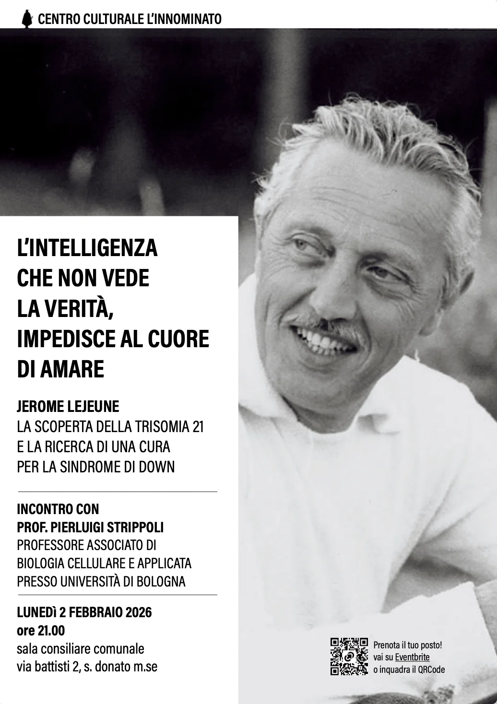
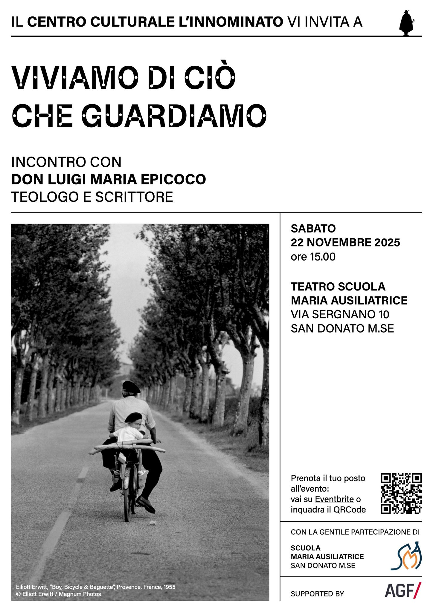
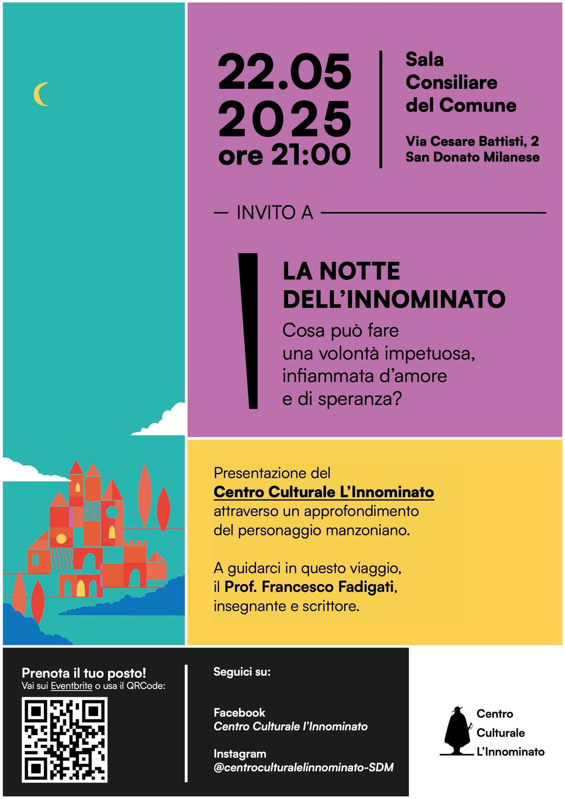

ESPLORA
Esplora l'archivio degli incontri organizzati dal Centro Culturale L'Innominato. Per gli incontri per cui è disponibile, puoi trovare il link di YouTube per rivedere la registrazione online.

Jerome Lejeune
La scoperta della Trisomia 21 e la ricerca di una cura per la Sindrome di Down

Don Luigi Maria Epicoco
Teologo e scrittore

Prof. Francesco Fadigati
Insegnante e scrittore
Cosa può fare una volontà impetuosa, infiammata d'amore e di speranza?
Presentazione del Centro Culturale L'Innominato attraverso un approfondimento del personaggio manzoniano
Notizie in tempo reale sui nostri incontri e iniziative
Lo streaming degli incontri in diretta e l'archivio